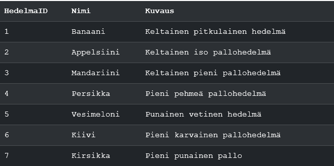
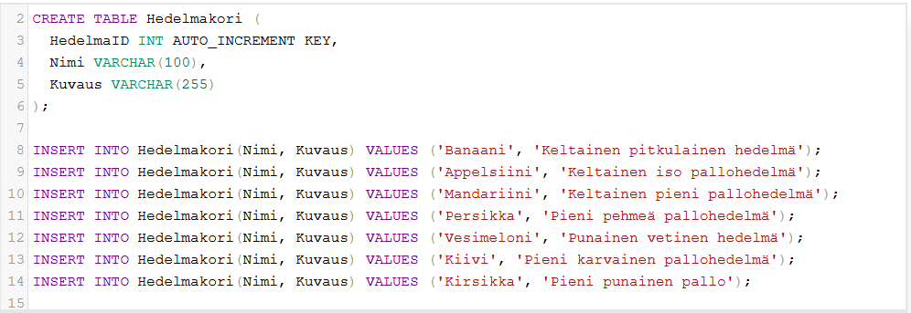

Johdanto
Tietokannat ovat olennainen osa nykyaikaista tietotekniikkaa ja tietojenkäsittelyä. Ne tarjoavat tehokkaan ja jäsennellyn tavan tallentaa, hallita ja hakea tietoja erilaisista lähteistä ja sovelluksista. Tietokannat ovat keskeisiä monissa eri yhteyksissä, kuten liike-elämässä, tieteessä, terveydenhuollossa ja julkishallinnossa, ja niiden käyttö on yleistynyt huomattavasti viime vuosikymmeninä.
Yksi tietokantojen tärkeimmistä eduista on niiden kyky tallentaa suuria määriä tietoa jäsennellysti ja tehokkaasti. Tietokannat koostuvat taulukoista, joissa tiedot on jaettu riveihin ja sarakkeisiin. Tämä rakenteellinen lähestymistapa mahdollistaa tietojen helpon organisoimisen ja hakuoperaatioiden suorittamisen.
Tietokannoilla on myös tärkeä rooli tietojen eheyden ja turvallisuuden varmistamisessa. Ne voivat sisältää mekanismeja, kuten eheyssääntöjä ja käyttöoikeuksien hallintaa, jotka varmistavat, että tietoja käsitellään oikein ja että niihin pääsee vain valtuutetut käyttäjät.
Tietokantojen käyttö on laajaa ja monipuolista eri aloilla. Esimerkiksi yritykset voivat käyttää tietokantoja asiakas- ja tilaustietojen hallintaan, varaston seurantaan ja liiketoiminnan analysointiin. Tieteellisissä tutkimuksissa tietokannat voivat sisältää suuria määriä tieteellistä tietoa, kuten geneettisiä sekvenssejä tai ilmastotietoja. Terveydenhuollossa tietokannat voivat sisältää potilastietoja ja lääketieteellistä tutkimusta.
Tietokantojen kehitys on jatkuvaa, ja uusia teknologioita ja lähestymistapoja tulee jatkuvasti markkinoille. Esimerkiksi pilvitietokannat tarjoavat joustavan ja skaalautuvan tavan hallita tietoja verkon kautta, kun taas Big Data -teknologiat mahdollistavat valtavien tietomäärien käsittelyn ja analysoinnin reaaliajassa.
Kaiken kaikkiaan tietokannat ovat olennainen osa nykyaikaista tietotekniikkaa ja ovat välttämättömiä monille organisaatioille ja sovelluksille. Niiden avulla voidaan tallentaa, hallita ja analysoida valtavia määriä tietoa tehokkaasti ja tarkasti, mikä auttaa organisaatioita tekemään parempia päätöksiä ja saavuttamaan liiketoimintatavoitteitaan.

Tietokantojen perusteet
Tietokanta on keskeinen työkalu tietojen keräämiseen, tallentamiseen ja järjestämiseen, ja se tarjoaa monia etuja verrattuna yksinkertaisiin
luetteloihin tai laskentataulukoihin. Kun tietojen määrä ja monimutkaisuus kasvavat, tietokanta tarjoaa rakenteen ja tehokkuuden,
jota tarvitaan tietojen tehokkaaseen hallintaan ja käyttöön.
Tässä muutamia syitä, miksi tietokannan käyttö on hyödyllistä:
1. Tietojen järjestäminen: Tietokanta mahdollistaa tietojen järjestämisen loogisiin taulukoihin ja suhteisiin, mikä helpottaa tietojen ylläpitoa ja hallintaa.
2. Tietojen integriteetti: Tietokannan hallintajärjestelmä (DBMS) voi asettaa eheyssääntöjä ja varmistaa, että tietojen eheys säilyy, estäen esimerkiksi epäkelpojen tietojen tallentamisen.
3. Tietojen tehokas hakeminen: Tietokanta mahdollistaa tehokkaan kyselyjen suorittamisen tietojen hakemiseksi, päivittämiseksi ja poistamiseksi.
4. Tietojen skaalautuvuus: Tietokanta skaalautuu paremmin suurille tietomäärille kuin yksinkertaiset luettelot tai laskentataulukot.
5. Samanaikaisten käyttäjien hallinta: DBMS voi hallita useiden käyttäjien samanaikaista pääsyä tietokantaan ja varmistaa, että tietojen käsittely tapahtuu turvallisesti ja tehokkaasti.
6. Tietoturva: Tietokannan hallintajärjestelmä voi tarjota tietoturvaominaisuuksia, kuten käyttöoikeuksien hallintaa ja tietojen salauksen, mikä suojaa tietoja luvattomalta käytöltä ja manipuloinnilta.
Kaiken kaikkiaan tietokannan käyttö helpottaa monimutkaisten tietojen hallintaa ja käyttöä, mikä tekee siitä olennaisen osan monia erilaisia sovelluksia ja organisaatioita.
SQL
SQL-kieli (Structured Query Language) on relaatiotietokannoissa käytetty kieli. Tietokantaan voi tehdä erilaisia hakuja, muutoksia ja lisäyksiä käyttämällä SQL-kieltä ja sen komentoja. Komennot muodostuvat avainsanoista (SELECT ja WHERE) tai muista arvoista, kuten taulujen ja sarakkeiden nimistä.
Otetaan esimerkki:
Meillä on tietokanta, jossa on hedelmiä ja niiden kuvauksia. Haluamme hakea kaikki tietokannan hedelmät, joten haemme ne käyttämällä komentoa:
SELECT * FROM Hedelmakori;Vastaukseksi saat listan hedelmistä:
Tässä tietokannan koodi:
Käy testaamassa tietokannan muokkaamista:
sqlfiddle.com
NoSQL
NoSQL-tietokanta eroaa perinteisestä relaatiotietokannasta siinä, että se ei käytä relaatiomallia tietojen tallentamiseen. Relaatiotietokannat perustuvat taulukkomalliin, jossa tiedot tallennetaan tauluihin, jotka ovat keskenään kytköksissä. Sen sijaan NoSQL-tietokannat käyttävät esimerkiksi avain-arvo-, dokumentti-, sarake- tai grafiikkamallia tiedon järjestämiseen.

Tietokannan suunnittelu ja optimointi
Tietokannan suunnittelu ja optimointi ovat keskeisiä osa-alueita, joilla varmistetaan tietokannan
tehokas toiminta ja optimaalinen suorituskyky. Tässä on joitakin perusperiaatteita ja käytäntöjä tietokannan suunnittelun
ja optimoinnin kannalta:
Tarpeiden määrittely: Ihan ensimmäinen askel on selvittää tietokannalle asetetut tarpeet ja tavoitteet. Mihin suunnittelet
tietokantaa, mitä se tulisi sisältämään ja miten sen tulisi toimia. Määrittely sisältää muun muassa tietojen tyypit, jotka voivat
olla vaikka asiakas- ja tilaustiedot, tuotteiden tiedot, tapahtumatiedot jne.
Tietojen määrän arviointi on tärkeää tietokannan skaalautuvuuden kannalta, jotta pystytään varmistamaan, että se pysyy suorityskykyisenä
myös suurilla tietomäärillä. Määrän arviointi auttaa sinua myös suunnittelemaan tietokannan rakenteen ja indeksit optimoidaksesi kyselyjen suorituskyvyn.
Tietoturva- ja eheytyssääntöjen määritys tulee myös tehdä. Millaisia tietoturva- ja eheytyssääntöjä tietokannassa tarvitaan. Tuleeko käyttöön esimerkiksi
käyttäjien todennus ja käyttöoikeuksian hallintaa. Eheytyssäännöt varmistavat tietojen oikeellisuuden ja eheyden.
Tietokannalla on hyvä olla luja perusta, koska tällöin tietokanta toimii hyvin.